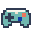
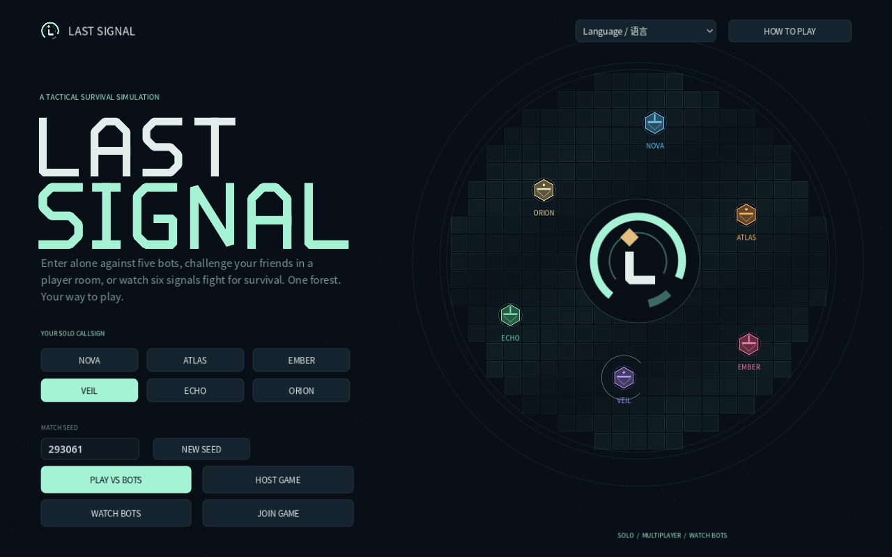

Plan your next move
Each turn gives you time to plan. Think about what you need now and what you might need a few turns later.

PROJECT_FILES / LAST_SIGNALSTANDALONE GAME / TURN-BASED STRATEGY / SURVIVAL
A turn-based survival strategy game inspired by the dark forest theory. Six contestants compete through resource management, technology auctions, alliances, and strategic decision-making.

01 / CASE STUDY
Last Signal puts six contestants in a hidden battlefield. The core experience revolves around limited resources, powerful technology, and relationships that can change as the match develops.
I designed and developed the game in Godot, bringing together turn-based survival, bidding, supply drops, and player alliances in a standalone Windows release.
The released game supports 1–6 players. Its published page lists local and server-based networked multiplayer.
02 / CASE STUDY
03 / CASE STUDY
Each turn gives you time to plan. Think about what you need now and what you might need a few turns later.
Bid against other contestants for technology. Winning an auction can give you an edge, but you still need credits for later.
Keep an eye on your health, stamina, and credits. Go after supply drops when you need more resources.
You can form alliances, trade credits, and track your partner. Working together can help, but only one contestant can win.
04 / CASE STUDY
Health, stamina, and credits all need managing. The auction screen shows your balance and how much you would have left after a bid or buyout, so you can check the cost before committing.
Buying a powerful technology can help you survive, but it also leaves you with fewer credits. You have to decide whether to spend now or save for what comes next.
Players can trade credits and work together to survive. Since only one contestant can win, you still have to decide how much to trust your partner.
05 / CASE STUDY